Best Free-to-Play Games That Respect Your Wallet
Not all free games are created equal. These are the ones where skill matters more than your credit card — and where you'll actually have fun without spending a penny.
Free-to-play has a reputation problem — and often, it's deserved. But a handful of games in the genre have managed to build compelling experiences where free players are genuinely competitive, and spending money buys cosmetics, not advantages. Here are the five best.
The best gunplay in any battle royale. The Gulag second-chance mechanic genuinely changes how death feels in the genre. The loadout drop system removes loot dependency. Spending money buys skins — it doesn't change the skill ceiling.
A card game you can play in three-minute sessions with legitimate strategic depth at high levels. The free-to-play experience is slower than paying, but Draft mode creates a perfectly level playing field. For mobile, there's nothing tighter in terms of match design.
Zero Build mode removed the building skill gap that excluded casual players. The battle pass remains excellent value, and nothing you buy gives a gameplay advantage. The cultural events — concerts, story moments — are genuinely extraordinary and completely free.
All 124 heroes are permanently free. The battle pass buys cosmetics, not power. The International prize pool (funded by the community) has exceeded $40 million. If you want the deepest competitive game in existence at zero cost, Dota 2 is it — though the learning curve is a genuine cliff.
Purely cosmetic monetization, no pay-to-win, the best movement system in any battle royale, and a ping communication system so good that every genre competitor copied it. The Legend unlock grind is slow, but the core experience is flawless without spending anything.
Free-to-play done right is still rare, but these five prove the model can work without exploiting players. Apex is the gold standard. Dota 2 is for the committed. Fortnite and Warzone are ideal for casual sessions. Clash Royale is the best option if you're primarily on mobile.
Editorial Method
This page is part of a cleaned Envizion publishing set. It is written for a reader who wants a practical decision, not a search-engine doorway. The page uses an original local SVG cover made inside this project, summarizes the strongest points directly, and keeps the limits visible. Where the topic depends on changing stores, patches, follower counts, or platform behavior, the page treats those details as estimates and points readers toward checking the current official profile or store before making a final decision.
The goal for this article page is to add enough context that a visitor can leave with a useful conclusion. It avoids imported stock images, copied articles, and placeholder entries. If a note is only a short draft or generated filler, it is kept out of the sitemap until it has a real editorial reason to exist.